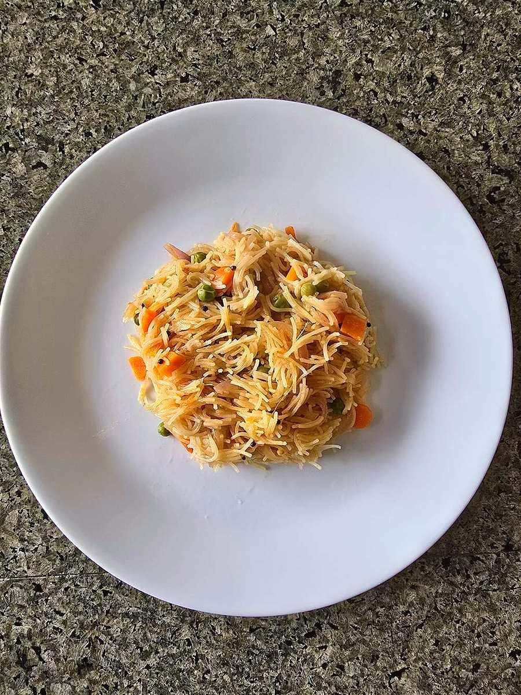

Muzaffar
saffron-yellow fine vermicelli fried in ghee and glazed with syrup, khoya and slivered nuts

Allergens in Muzaffar: milk, gluten, tree nuts.
Ingredients
Quantities for 6.
- 200g fine seviyan, broken into 5cm lengths Vermicelli
- 5 tbsp Ghee
- 200g Sugar
- 300ml Water
- 100g, crumbled Khoyagrated paneer is a poor but workable stand-inoptional
- a good pinch, soaked in 2 tbsp warm milk Saffron
- 2 tbsp, warm Milkfor the saffron
- 6 pods, seeds ground Cardamom
- 15, slivered Almonds
- 12, slivered Pistachios
- 2 tbsp Raisinsoptional
- 1 tsp Kewra Wateroptional
Cookware
stovetop, kadhai
Checked against the ingredient list for ten allergens: milk, egg, fish, crustaceans, tree nuts, peanuts, sesame, mustard, soy and gluten. Brands vary, so read the label on anything new to you.
Before you start
- Soak the saffron in warm milk at least 20 minutes ahead so the colour is deep, not streaky.
- Sliver the nuts and have them ready; once the vermicelli is roasted the dish moves fast.
- Use fine seviyan, not thick noodles. The strands should stay separate at the end, never mushy.
Method
- Warm 3 tbsp ghee in a kadhai on low heat and add the broken vermicelli. Roast 6-8 minutes, stirring constantly, until it is a deep even brown and smells toasty.Constant stirring and low heat. Vermicelli goes from brown to burnt in about fifteen seconds.
- Tip the roasted vermicelli onto a plate so it stops cooking.
- In the same pan bring the sugar and water to a boil and cook 4 minutes, until the syrup is slightly sticky between finger and thumb but nowhere near thread stage.
- Stir the saffron milk and ground cardamom into the syrup.
- Add the roasted vermicelli to the simmering syrup, stir once, cover and cook on the lowest heat 6-8 minutes, until the strands are soft and the syrup is almost gone.Do not stir while it cooks or the strands break into mush.
- Fry the almonds, pistachios and raisins in the remaining 2 tbsp ghee in a small pan for 90 seconds, until the nuts are gold and the raisins swell.
- Uncover the vermicelli, scatter over the crumbled khoya and half the fried nuts, and fold through gently with a fork.
- Sprinkle the kewra water, cover off the heat and rest 5 minutes.
- Serve warm, topped with the remaining nuts and raisins.
Storage
Keeps 3 days refrigerated in a covered box. Reheat covered on low with 1 tbsp milk to loosen it, or eat cold. Many in Lucknow prefer it that way.
Nutrition Low estimate
One serving of Muzaffar (146 g) is about 472 calories, or 324 calories per 100 g.
Medium protein: 10 g a serving, 8% of the calories
| Per serving146 g | Per 100 g | |
|---|---|---|
| Calories | 472 kcal | 324 kcal |
| Protein | 10.0 g | 7 g |
| Carbohydrate | 69.9 g | 48 g |
| of which sugars | 44.3 g | 30 g |
| Fibre | 1.8 g | 1 g |
| Fat | 17.9 g | 12 g |
| of which saturated | 9.8 g | 7 g |
| of which unsaturated | 7.1 g | 5 g |
Syrup left in the bowl, or batter that yields more than the stated servings, means the real figures are likely lower. Nearest database match used for vermicelli. Estimated from raw ingredients using USDA FoodData Central.
More like this: Vegetarian Indian recipes · No onion no garlic recipes · Awadhi/Lucknowi recipes
Times, yields, allergens and nutrition are guidance. Use your own judgement on doneness and on storing. More in About.